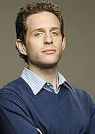
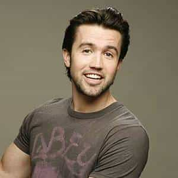
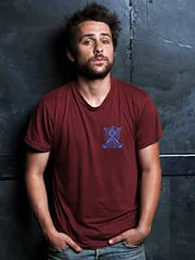
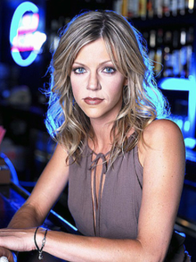
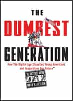

It’s Always Sunny In Philadelphia (hereafter referred to as Always Sunny) is a show on FX that has spawned many seasons.
The show has been called “Seinfeld on crack.” They do draw on the idea of a show “about nothing.” Further, the characters are even more self-absorbed, self-destructive and bizarre than anything on Seinfeld. In fact, the characters actually track the Seinfeld characters.
The show is set in Philadelphia (surprise!) and is centered around five people called “The Gang.” Two of the members own a bar called Paddy’s Pub and most of the show is centered around this bar. It is poorly run, as the characters are all self-absorbed and constantly hatching crazy or ridiculous plans. They are ineffective, lazy and often cruel.

Dennis Reynolds: A clear-cut narcissist. He lives out most of his fantasies in his head. He does bed women, but they are usually repulsed by his rank self-absorption. He rarely displays empathy or compassion and is, in general, an asshole. He is the brother of Dee and the one of the co-owners of Paddy’s Pub. He went to UPenn and thinks he is far more intelligent than he really is. He pretends to the be the leader, and technically is, but is only interested in the worship and status.

Ronald “Mac” McDonald: The other co-owner of Paddy’s Pub. He came from a terrible broken home – his father was a drug dealer and his mother is apathetic towards him. He is a codependent & Dennis is the narcissist he needs. His catchphrase is “What’s up bitches?” He feels superior to the rest of the group. He feels he is the strongest of the group and the protector. He carried on a relationship with a pre-op transsexual and claiming to be “putting time in” before the surgery. Hilarious.

‘
Charlie Day: The omega of the group. He is the janitor of the bar, doing all the work nobody else wants to do. He lives in an apartment with Frank. He is nursing a serious crush on “The Waitress” at a café “The Gang” frequents. He probably is the most compassionate of the group, as he is the only one who will regularly display levels of compassion for others. That being said, he is an alcoholic and drug addict. He has poor personal hygiene and is completely unable to function in normal society. He clearly hates himself and suppresses his natural talents for songwriting and the piano. He might be the most interesting character on the show.

Dee Reynolds: A stereotypical inverted narcissist that will vacillate between compensatory narcissism and strong codependency depending on the situation. She is a caricature of the modern American female. In way, it is done brilliantly. She is supremely superficial and completely self-absorbed. Her internal view of herself will never match up with the way she sees herself in reality. She vainly tries to be seen as a member of “The Gang,” but the other three males sense her qualification and toy with her. She wants to be an actress and comedian but she never will accomplish either of those goals.
![[Image: always_sunny1.jpg]](http://televisionrevival.com/wp-content/uploads/2008/07/always_sunny1.jpg)
Let’s talk a bit about Seinfeld. It was a phenomenal show that featured genius-levels of writing and jokes. However, it was the precursor for this show. Recall the character of George. He is a classic codependent. George was continually labeled highly unattractive by women who watched the show – he was the classic inverted narcissist with little going on for him. The other characters – Seinfeld, Elaine, and Kramer all displayed levels of narcissism, but nothing of the clinical level. However, their issues bled into the Millennial Generation and created an even worse generation – exemplified by Always Sunny.
The characters on the show are all narcissists of some degree. I doubt any one of them could go to a psychologist and not get diagnosed with a strong case of narcissism. They are a group that desperately needs each other, but they only care about themselves. They need each other so they have victims to prey on psychologically.
They really are a group of shitty people. The more I think about it, the more I am reminding of how sick our society is and how sick my generation is.
However, consider the above picture. Charlie & Mac are leaning away – they are the only characters who have displayed the ability to change. Dennis and Dee know they are the key psychological members of the group. Charlie has his back completely turned, Mac just has a downward gaze. Charlie knows he is the omega – the low man on the totem pole. Mac knows he will always play second fiddle to Dennis – the role he doesn’t want to play, but the only role he can play in this relationship.
Charlie knows he could bounce and it would affect the group the least – that is why his back is to them. They call his garbage-man job “Charlie work,” their way of reinforcing his inferiority. As for Mac, Dennis needs him as much as Mac needs Dennis; that break won’t happen. His downward gaze reflects he gets no affection from Dennis – he needs to worship Dennis in order for their relationship to exist.
Nothing healthy here.

Inefficacy is generally defined as lacking the power to achieve the targeted result. That is my generation in one word.
The Millennial Generation is a generation of narcissistic people who think they know more than they do. Read this sobering article from the The Last Pyschiatrist.
Consider Always Sunny through this article, in particular, this quote:
And, rather than the internet bringing diverse people together, it seems to foster tribes of the like-minded, who never closely examine anything different(ly).
Diversity is skin-deep in American society. Recall I took a Critical Race Theory class in law school, and during a presentation on the lack of diversity in the professors at the school they claimed there was only one LGBT professor on staff. I inquired into the political/philosophical views of said professor. They gave me a blank stare and said it was very important to increase the sexual orientation diversity on the staff.
I responded if you judge people on the content of their character, what matters most is the diversity of ideas. A group of four white males, one a communist, one a libertarian, one a conservative and one an anarchist will produce more intellectual content than a black male, lesbian, Asian transsexual and poor Hispanic who are all solid liberals. The blank stares I received were telling. Narcissistic diversity only considers immutable characteristics, real diversity values mutable characteristics over immutable ones – without ignoring the contributions race or class might bring.
I was going to quote more, but it really is pointless. My generation – the Millennial Generation – is the greatest bunch of self-absorbed narcissists this world have even seen. I wonder if every civilization ends this way – a bunch of entitled fools who think wealth and privilege are their birthright. Millennial’s get records amounts of worthless degrees, place incredible amounts of value on artificial goods and are followers of a supreme order. They worry themselves sick over social acceptance and have little ability and desire to change themselves.
Always Sunny shows this. They no ability to change who they are and are completely preoccupied with their self-image. All the characters clearly have been raised, as children, poorly and their narcissism is their way of compensating for that childhood. The school system enforces this, as children do best learning from their parents or other family figures. Children do not do well learning from strangers. If the school system was doing the most to help students, children would not bounce from teacher to teacher each grade level – they would have the same teacher from kindergarten through, at least, 8th grade.
![[Image: american-teacher-movie-poster-449ce3.jpg]](http://826valencia.org/wordpress/wp-content/uploads/2011/10/american-teacher-movie-poster-449ce3.jpg)
Which brings up the next point. TLP notes that my parent’s generation – teachers – really is dumb, they just don’t know it. You see this in the teaching profession. Right now, with no training, I can assure you I can teach any cohort up until high school. I could easily riff on English, writing, history and social science with no training. Math might need some work, but that could be done quickly. That is the issue – the people who teach have no passion nor any desire for true intellectual betterment.
I have many female friends who are teachers. None, not one, has a passion for knowledge. They call their passion for raising children as the passion for teaching. It is all about them and their desire to be seen as people who truly care about the education of the next generation, only to go home at night, curled up with a bucket of ice cream and watching some inane reality TV show.
Which highlights the narcissism of my generation. They know how to put on a great show – or not (the flipside) – but have nothing to back up their bluster. You see this in Always Sunny, as the characters are often outed to be bullshitting. In one episode, Charlies claims to be an expert on “Bird Law” and the real attorney he was arguing with just gave him a look that says, “What the fuck is wrong with you?”
The art of bullshitting is a narcissistic trait, but one that doesn’t prove narcissism. Everybody who succeeds in life needs to be able to bullshit.
However, we see the insecurity bubble up in society as “Teacher Appreciation” days/weeks/months. As TLP observed in the article, on some level the teachers get their deficiencies. They need inordinate amounts of praise in order to shore up their flagging egos. The more students continue to fail, the more we will need more social praise for teachers. Unable to come to terms with their professional failure, they more they need social approval – although it doesn’t end there. Consider the vast majority of teachers are women. Maybe if they became wives and mothers they would not need to command small armies of children – they could just give birth to their own. A main contribution to teacher narcissism is the fact that teachers can just walk away or just pass on a troubled kid to another grade.
Bringing it back to Always Sunny and my generation, they are just products of a severely deficient system. They are products of not just a narcissistic society at large, but a school system steeped in narcissism. All of the characters display serious issues, most relating to narcissism. Many of them just live in worlds of their own creation with as little reference to the real world as they can handle. I remember watching a movie in which video games went full viral in the sense you could live whatever life you wanted inside your head with the game. That sort of game would absolutely destroy civilization.
The incredible psychological and mental deficiencies of the Millennial generation certainly aren’t their fault, but are their responsibility. The generation must come to grips with their self-absorption and face it head on, in order to save the fate of America. Odds are, that won’t happen. Just more status updates about how awesome they are – #YOLO! – as America slowly flushes out to sea.
Read Next: Brilliant Essay On What Capitalism Is Doing To Us